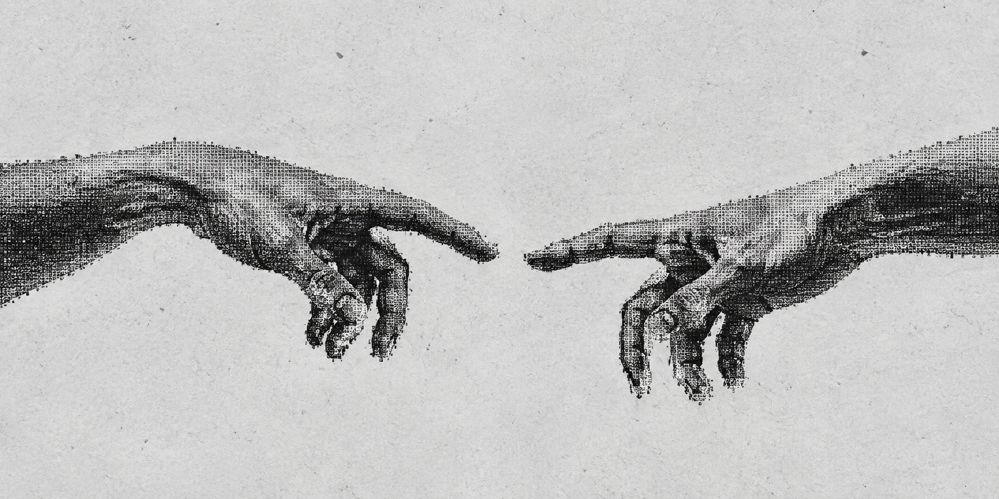

Engineering
I build infrastructure and ML systems at Rivian.
My work spans production engineering, observability, and model deployment on the AI & Data Platform team.
Elsewhere: music, books, and things worth working on.
Selected work
dogwatch
eBPF observability, packaged as a single binary.
Ryo
A work in progress: keeping telemetry searchable without paying hot-storage prices for all of it.
Writing
The log you delete to make this month’s bill smaller might be the one you need next month. I think the observability stack has its source of truth backwards.
2026.05
I keep listening to the same few dozen songs. I’m making myself listen to whole albums for a change.
2026.04
Getting this site to work was easy. Knowing when it was good enough was the part I kept getting wrong.
2025.11
AI alignment, world models, brain-computer interfaces, energy, and robotics. These are the five problems I keep coming back to when I think about what to spend my time on.